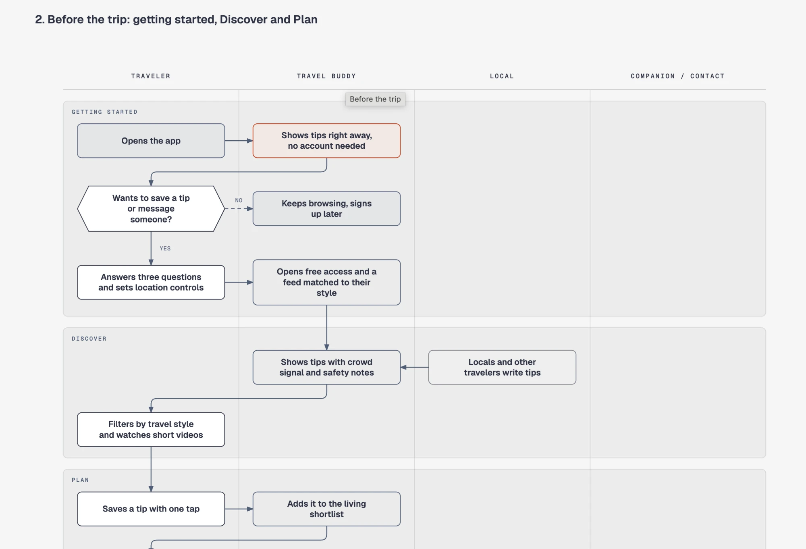
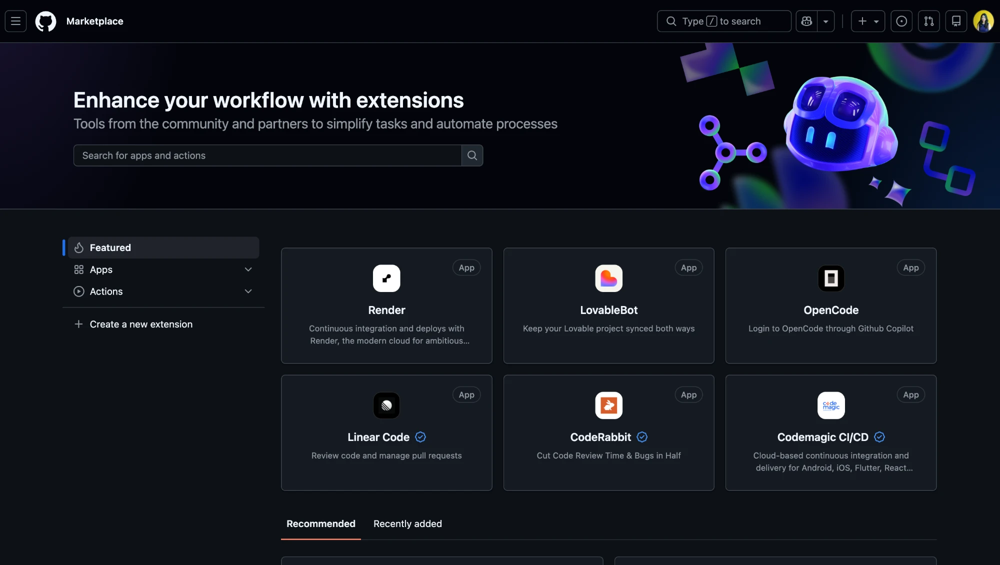
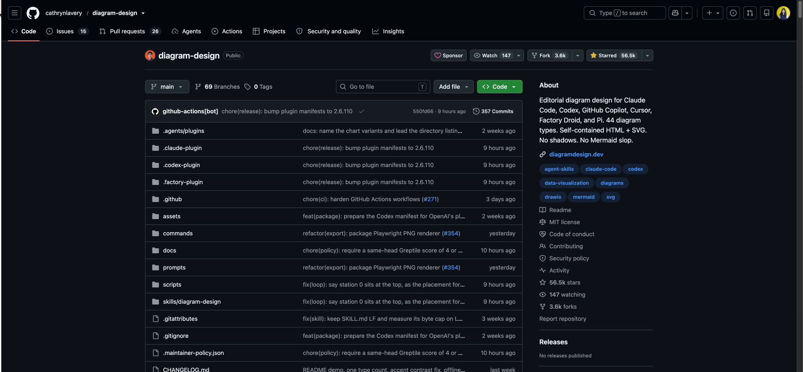
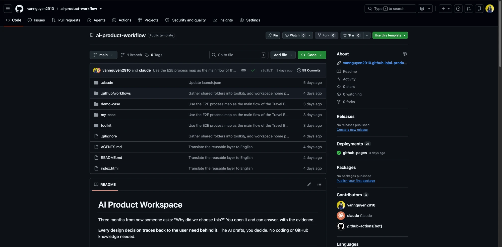
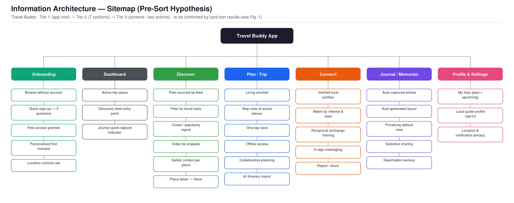
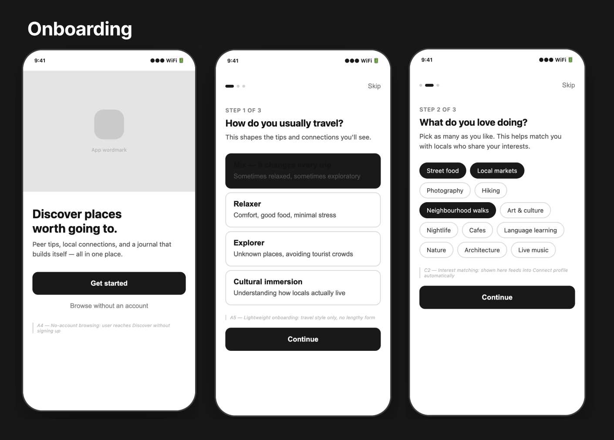
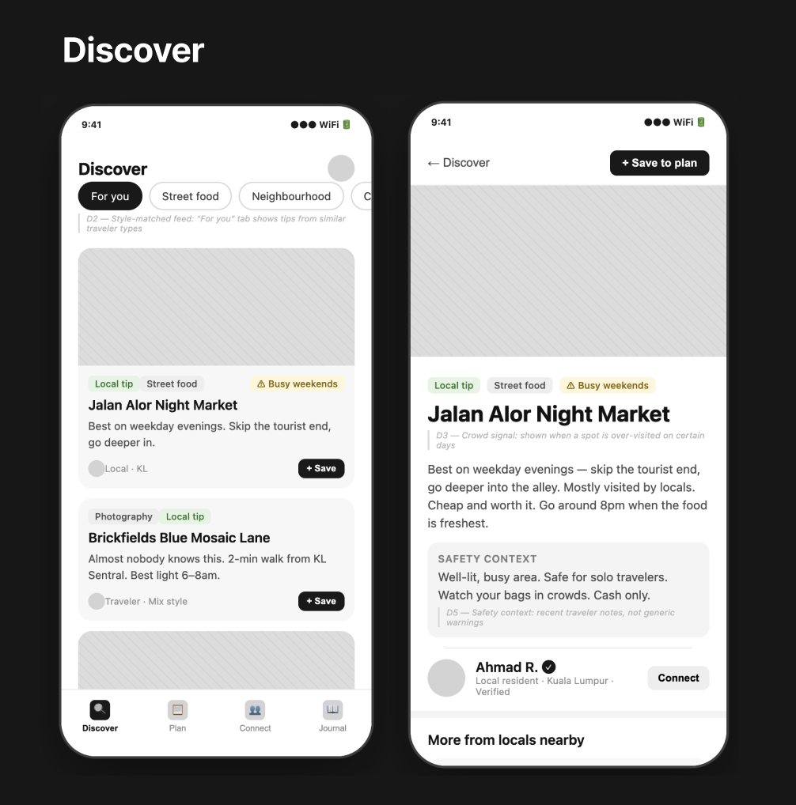
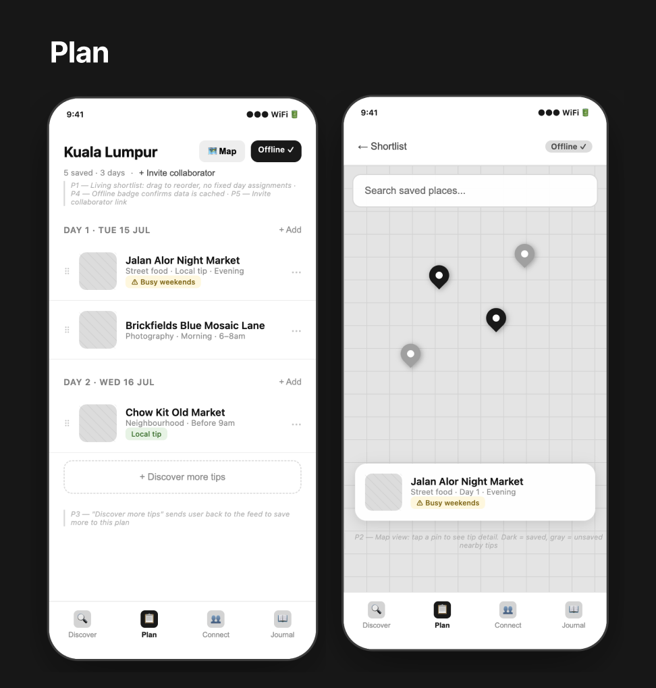
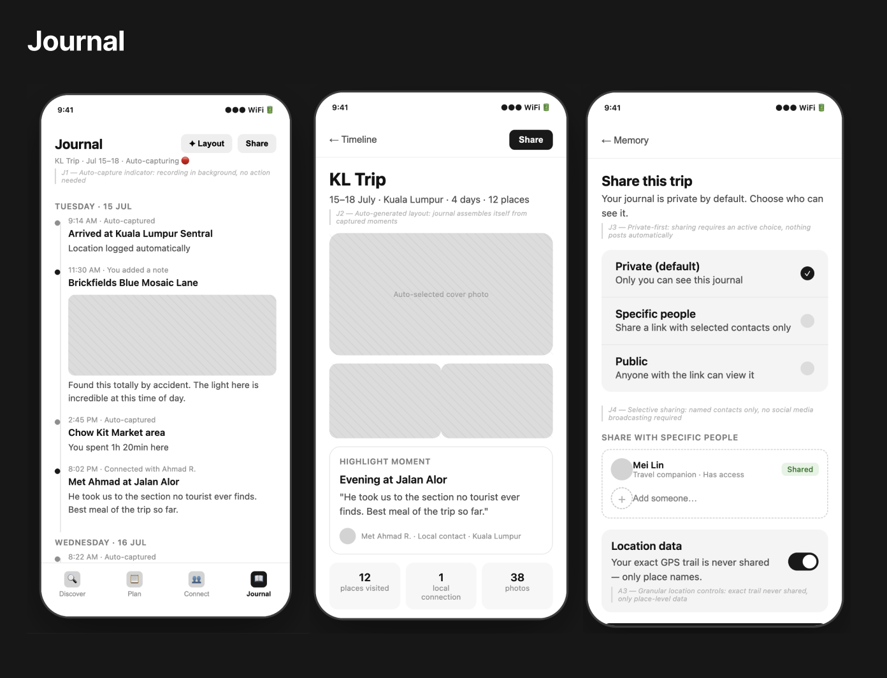

Reuse What
Others Built
Dùng lại skill và repo của người khác mà không cần code.

Winnie
Nguyen
Master of UX & Service Design
Product Design Instructor

Chọn, đọc,
dùng lại
Four things you can reuse
Skill
Folder có file SKILL.md, AI đọc và làm theo khi được gọi.
Template repo
Repo mẫu có folder và quy trình dựng sẵn.
Component library
Bộ component chép vào dự án.
File rules
Một hai file markdown chứa luật cho AI.
Marketplace không phải nơi tìm skill
GitHub Marketplace liệt kê Apps và Actions. Skill nằm ở repo và awesome list.

Đọc trang repo trước khi cài
Tác giả, rating, commit gần nhất, license, README.

Rating cao chưa chắc an toàn
Đọc mà không cần đọc code
Bạn
Agent
Agent
Bạn
Ba cách dùng lại
Dùng nguyên bản
Dùng nguyên bản khi repo làm đúng việc cần.
Lấy làm template
Lấy làm template khi cấu trúc đúng, nội dung khác.
Chỉnh file markdown
Chỉnh file markdown khi gần đúng, cần khác vài chỗ.
Cài ở đâu để thử
Dùng chung
Skill dùng được ở mọi dự án, ảnh hưởng toàn bộ.
Một dự án
Skill chỉ dùng trong một folder, dễ gỡ.
Trước khi giữ một repo
Clone, đọc,
chỉnh
Clone, đọc và chỉnh một template repo
Một folder mới, tách khỏi dự án thật.
Năm bước sử dụng repo có sẵn
Nút ‘Use this template’
Repo template mặc định cho Practice, có sẵn demo case và README.

Một workflow
dựng sẵn
The whole process, one place
Discovery tới deliver theo Double Diamond. Đầu ra của activity này là đầu vào của activity sau.
Từ card sort tới sitemap
Ví dụ từ demo case: card sort board và IA sitemap.


wireframe





Từ template đến workflow của bạn
Bấm ‘Use this template’
Thay nội dung bằng dự án của mình
Sửa các file markdown và step card thành workflow riêng
Popular
Skills
User flow và diagram
diagram-design
Nhiều kiểu diagram dạng HTML và SVG, kể cả flowchart, swimlane, journey, service blueprint.
customer-journey-map
Journey map xuất ra Markdown hoặc Mermaid.
User research
ux-research-skills
Biến transcript phỏng vấn thành persona, empathy map, journey map.
ux-research-skills
18 skill, mỗi skill một việc: kế hoạch, screener, phỏng vấn, persona, journey, usability test.
ux-research-discovery
Tổng hợp theme, JTBD và persona từ nghiên cứu.
design-skills
Phỏng vấn, affinity diagram, thematic analysis, persona, opportunity map.
Journey mapping và service blueprint
customer-journey-map-skill
Dựng journey từ hội thoại, có swimlane service blueprint và storyboard.
journey-mapping
Journey map và service blueprint: touchpoint, cảm xúc, friction.
customer-journey-map
Journey theo giai đoạn, touchpoint, cảm xúc, metrics.
service-blueprint
Service blueprint kiểu Shostack: front-stage, backstage, support.
Hand off cho developer
design-handoff
Spec cho dev: layout, token, props, trạng thái, breakpoint, edge case, animation.
designer-skills
Có lệnh handoff, component spec và tokenize.
ux-ui-agent-skills
Token DTCG ba tầng, 52 component, kiểm tra WCAG.
Product management
pm-skills
Hơn 100 skill từ discovery tới strategy, execution, launch, growth.
Product-Manager-Skills
Chuẩn bị phỏng vấn discovery, viết PRD từ ghi chú discovery, ưu tiên.
pm-skills
68 skill theo Triple Diamond, có sub-agent phản biện.
Design (UI/UX)
frontend-design
Dựng UI chất lượng cao, tránh giao diện na ná nhau.
Impeccable
Biến góp ý design mơ hồ thành lệnh lặp lại được.
UI UX Pro Max
Chọn hướng design và dựng design system theo loại sản phẩm.
Interface Design
Giúp AI nhớ design system, giữ nhất quán.
Vercel Web Design Guidelines
Kiểm tra UI theo quy tắc accessibility và UX.
Home assignment
Chọn và tìm các skills
phù hợp
- →Chọn một việc lặp lại trong dự án đang làm.
- →Tìm ba ứng viên từ hai nguồn, chấm theo cheat sheet.
Thử và quyết định
- →Thử một ứng viên trong folder mới, viết giữ, sửa hay bỏ kèm lý do.